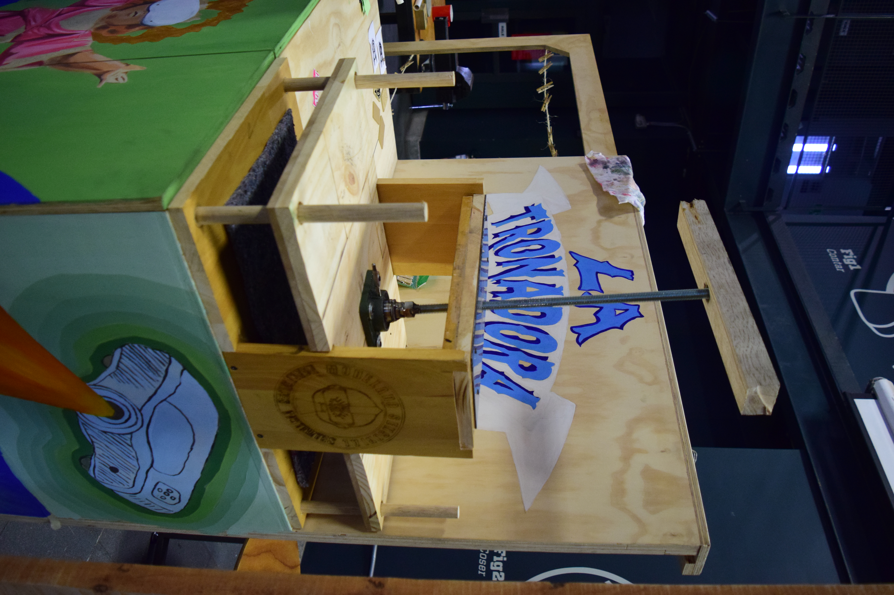

Proceso de creacion de LA TRONADORA
Proceso de Desarrollo
Se concibio como un módulo itinerante —una célula móvil de trabajo— capaz de desplazarse por distintos territorios del municipio de Envigado. Este espacio se plantea como un laboratorio cultural y tecnológico que facilite la creación de una agenda participativa, abierta al diálogo entre arte, tecnología y saberes populares.
Funciones de la tronadora
- Estacion de serigrafia
- Estacion de stencil
- Estacion de grabado con prensa
- Exponer piezas artisticas creadas
- Poder llevarse a muchos lugares
